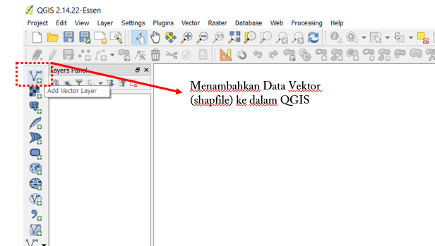
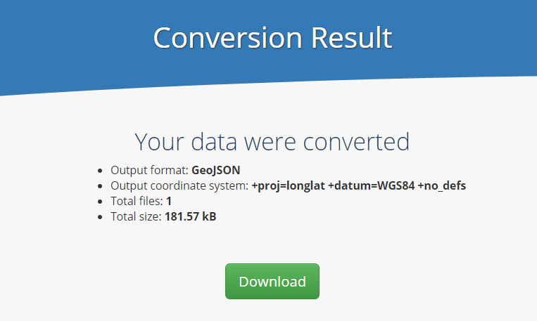

Converting Shapefile Data to GeoJSON
Download page as PDFObjectives:
- To be able to understand the definition of GeoJSON data
- To be able to convert shapefile to GeoJSON with QGIS
- To be able to download GeoJSON from Overpass Turbo
- To be able to convert shapefile to GeoJSON using GeoData Converter
If you do not have an educational background in geography or you are not too familiar with Geographic Information Systems (GIS), then this GeoJSON format may sound familiar to you. However, you do not need to worry about that because getting spatial data with GeoJSON format is not as difficult as you think. GeoJSON can be obtained by changing or converting from spatial data that you already have such as shapefiles, keyhole markup language (.kml) or GPS results, .gpx. In this module you will learn the definition of GeoJSON data and several tools that can help you to convert spatial data especially shapefiles into GeoJSON format.
I. The definition of GeoJSON data
GeoJSON, which is a modification of Java Script Object Notation (JSON), is a simple spatial data format. Unlike other spatial formats such as shapefiles, GeoJSON displays spatial shapes of data with a smaller size but still carries attribute information from the data.
GeoJSON can be a point (point), line (line), area (polygon) which can represent an object on the surface of the earth. Because of its simple nature and is a modification of a program language, GeoJSON is more often used for web-based Geographic Information Systems (GIS) processing or sites that use GIS to visualize spatial data such as Mapboxes, Leaflets, OpenLayer and even some sites provided by the Humanitarian OpenStreetMap Team (HOT) such as HOT Export, Tasking Manager and Map Campaigner.
II. Converting shapefile to GeoJSON using QGIS
By using QGIS, you can convert shapefile data from both OpenStreetMap (OSM) data and your own spatial data that you have previously had. However, before converting shapefile data you need to download QGIS software on your laptop or computer. You can see the guidelines to download QGIS in Creating Field Maps using QGIS module. If you have successfully installed QGIS, please follow the steps below:
- Open QGIS and select Add Vector Layer to add your shapefile data to QGIS.

Adding shapefile data into QGIS
- Then find and open the shapefile data that you want to convert to GeoJSON in QGIS by clicking Browse → Open.
The display of shapefile data in QGIS
- Right-click on the shapefile data layer then select Save As…

Option for shapefile data conversion
- You should see a window and make sure you set it as the picture below:

The conversion settings from shapefile to GeoJSON
Format: Choose GeoJSON format
Save as: The place in your directory to save GeoJSON data
CRS : Coordinate reference for GeoJSON data result
Add saved file to map: Adding GeoJSON data into QGIS after conversion process finished.
After that, then click OK and you have successfully converted GeoJSON data that will appear in QGIS.

The display of GeoJSON conversion result in QGIS
III. Downloading GeoJSON Data using Overpass Turbo
If you do not want or can not install QGIS on your laptop / computer but still need to convert data formats to GeoJSON from OpenStreetMap data, Overpass Turbo can be a solution. Overpass Turbo is a website created by OpenStreetMap contributors which allows users to get several spatial data formats from OpenStreetMap including GeoJSON. Please follow the steps below to get GeoJSON from Overpass Turbo website:
- Please open your internet browser then go to the link URL https://overpass-turbo.eu/

Overpass Turbo site
- After that, please find the area that you want to download by typing the name of the area in the search box or you can also adjust the map display by zooming in and out the map using ‘+’ and ‘-’ buttons.

Area search option in Overpass Turbo
- After you found the area, then please select the Wizard menu at the top of the Overpass Turbo site.

Wizard menu wizard in Overpass Turbo site
- After that, type the query about the data that you want to get. The query is a tag that has a key and value based on the OpenStreetMap standard. If you do not already know about tags, keys and values, you should refer to OpenStreetMap Data Model module. For example, you want to take the administrative boundary of Semarang city so you can write “admin_level = 5 and name = Semarang” in the Query Wizard and click build and run query.

Query Wizard in Overpass Turbo site
- After that, query result will appear in Overpass Turbo.

Query wizard result of Semarang administrative boundary
- After the query result appear, click Export in Overpass Turbo menu then click download/copy as GeoJSON.

GeoJSON format export option in Overpass Turbo
IV. Converting shapefile to GeoJSON using GeoData Converter
If you want to change your own shapefile data instead of OpenStreetMap data then you do not want or can not install QGIS on your laptop / computer, then you can use one of the sites on the internet that provides shapefile data to GeoJSON conversion functions such as GeoData Converter. To do the conversion on this site, please follow the steps below:
- Please open your internet browser then go to the link URL https://mygeodata.cloud/converter/shp-to-geojson

The display of MyGeoData Converter site
- Add your shapefile data in the Upload box by clicking _Or browse file to convert _ then select + Add Files..
The box to upload shapefile data
- You need to know when uploading shapefile data, do not forget to include all the associated files with your shapefiles such as .dbf and .shx files so that your shapefile data can be converted perfectly. So, make sure you have selected all the files like the example below:

The result of adding shapefile data into Geodata Converter site
- Then, click Continue and you will see a confirmation box for the shapefile data that you want to convert. Make sure the Output Format is GeoJSON then click Convert Now!

The summary window before starting the conversion
- After that, click Download in the appeared window. The GeoJSON data result will be automatically downloaded to your laptop/computer.

Window to download GeoJSON conversion result
SUMMARY You have learned about spatial data with GeoJSON format and also know how to convert shapefile data to GeoJSON by using several tools such as QGIS, Overpass Turbo, and GeoData Converter. You can use all of these tools according to your needs and the availability of shapefile data that you have. Your GeoJSON data can be used as visualization on WebGIS or sites that can display spatial data such as Mapbox, Leaflets, HOT Export and Tasking Manager.